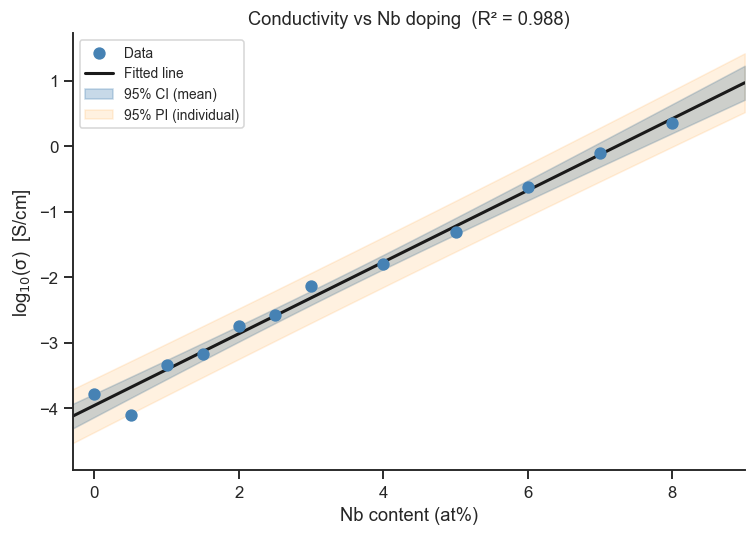
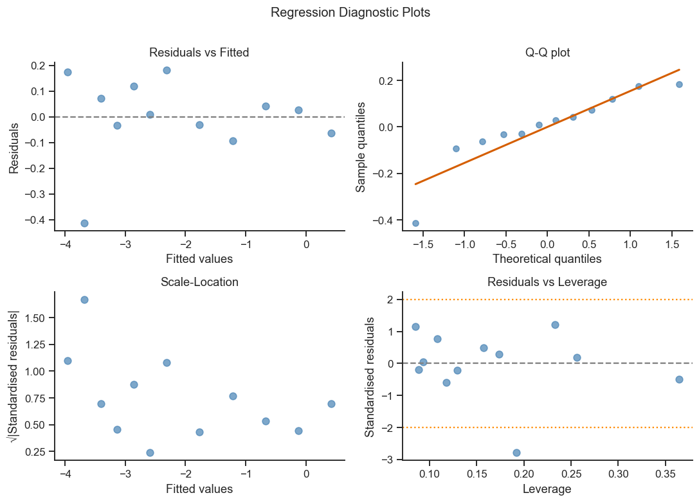
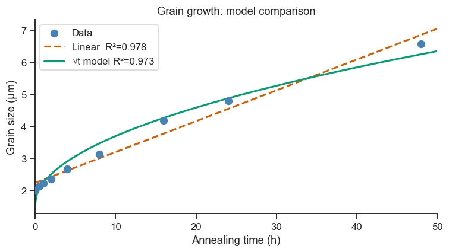

10. Simple Linear Regression#
Linear regression fits a straight line through a scatter of data points and provides a quantitative description of how one variable changes with another.
Topics
The linear model and least squares
Fitting with
scipy.stats.linregressandstatsmodelsGoodness-of-fit: R², adjusted R², RMSE
Confidence and prediction intervals
Residual diagnostics
Case study: electrical conductivity vs dopant concentration in TiO₂
import numpy as np
import pandas as pd
import matplotlib.pyplot as plt
import seaborn as sns
from scipy import stats
import statsmodels.api as sm
import statsmodels.formula.api as smf
sns.set_theme(style='ticks', palette='colorblind')
plt.rcParams.update({'figure.dpi': 110, 'font.size': 11})
rng = np.random.default_rng(13)
10.1 The Linear Model#
In words: the response is a straight line (\(\beta_0\) = intercept, \(\beta_1\) = slope) plus random scatter \(\varepsilon_i\). Least squares chooses \(\hat{\beta}_0\) and \(\hat{\beta}_1\) to minimise the total squared vertical distance between the data and the line, \(\sum_i (y_i - \hat{y}_i)^2\) — see Section 4 of the theory page for why squaring the distances (rather than just adding them up) is what makes this particular line the best choice.
# ── Dataset: electrical conductivity of Nb-doped TiO₂ ────────────────────────
# x = Nb content (at%), y = log₁₀(conductivity in S/cm)
x_Nb = np.array([0.0, 0.5, 1.0, 1.5, 2.0, 2.5, 3.0, 4.0, 5.0, 6.0, 7.0, 8.0])
log_sigma_true = -4.0 + 0.55 * x_Nb # true relationship
log_sigma = log_sigma_true + rng.normal(0, 0.12, len(x_Nb))
df = pd.DataFrame({'Nb_at_pct': x_Nb, 'log10_sigma': log_sigma})
# ── scipy: quick fit ─────────────────────────────────────────────────────────
slope, intercept, r_value, p_value, std_err = stats.linregress(df['Nb_at_pct'], df['log10_sigma'])
print('scipy.stats.linregress:')
print(f' Intercept β₀ = {intercept:.4f}')
print(f' Slope β₁ = {slope:.4f} (log₁₀(S/cm) per at%)')
print(f' R = {r_value:.4f}, R² = {r_value**2:.4f}')
print(f' p(β₁=0) = {p_value:.4e}')
scipy.stats.linregress:
Intercept β₀ = -3.9549
Slope β₁ = 0.5469 (log₁₀(S/cm) per at%)
R = 0.9941, R² = 0.9882
p(β₁=0) = 5.5897e-11
Take-home message
Slope=0.547 means each extra at% of Nb raises log₁₀(conductivity) by about 0.55 — equivalently, conductivity itself scales by roughly 10^0.55 ≈ 3.5× per at% Nb, since these are log units. Translating a log-scale slope back into a “times X” statement is usually the number that actually communicates to a materials scientist.
R²=0.988 says Nb content alone explains 98.8% of the observed variation in conductivity — an unusually clean fit for real materials data, consistent with dopant concentration being the dominant conduction mechanism here rather than uncontrolled defect chemistry.
p=5.6e-11 for the slope isn’t practically “more significant” than a p of 0.001 would be — both lead to the same decision. What R² adds beyond the p-value is magnitude: the p-value says the slope is real, R² says it’s also nearly the whole story.
10.2 Full Regression with statsmodels#
statsmodels provides a complete summary including standard errors, t-statistics,
p-values, and confidence intervals for all parameters.
model = smf.ols('log10_sigma ~ Nb_at_pct', data=df).fit()
print(model.summary())
OLS Regression Results
==============================================================================
Dep. Variable: log10_sigma R-squared: 0.988
Model: OLS Adj. R-squared: 0.987
Method: Least Squares F-statistic: 839.5
Date: Tue, 01 Sep 2026 Prob (F-statistic): 5.59e-11
Time: 17:41:47 Log-Likelihood: 5.7151
No. Observations: 12 AIC: -7.430
Df Residuals: 10 BIC: -6.460
Df Model: 1
Covariance Type: nonrobust
==============================================================================
coef std err t P>|t| [0.025 0.975]
------------------------------------------------------------------------------
Intercept -3.9549 0.079 -49.758 0.000 -4.132 -3.778
Nb_at_pct 0.5469 0.019 28.974 0.000 0.505 0.589
==============================================================================
Omnibus: 11.463 Durbin-Watson: 2.705
Prob(Omnibus): 0.003 Jarque-Bera (JB): 6.325
Skew: -1.421 Prob(JB): 0.0423
Kurtosis: 5.138 Cond. No. 7.30
==============================================================================
Notes:
[1] Standard Errors assume that the covariance matrix of the errors is correctly specified.
Take-home message
The top block repeats what
linregressalready gave: R-squared=0.988, and the overall F-statistic (839.5, p=5.6e-11) tests “does this model explain significantly more than just guessing the mean” — for a one-predictor model this F-test is mathematically identical to the slope’s own t-test below it.The coefficient table is the part
linregressdidn’t show: each row has a standard error (uncertainty on that coefficient), a t-statistic (coefficient ÷ its standard error), and a 95% CI — the slope’s CI [0.505, 0.589] never crosses zero, another way of seeing “this effect is real” beyond just the p-value.The bottom block is model diagnostics, not results to report: a large Cond. No. would flag multicollinearity (not an issue with a single predictor, and Section 12.5 of Notebook 12 shows what it looks like when it is an issue); Prob(Omnibus) and Jarque-Bera test whether the residuals are normal — worth a glance, but Section 10.4’s dedicated Q-Q plot below checks the same thing more directly.
10.3 Confidence and Prediction Intervals#
The fitted line itself is just a best guess — it’s built from a limited sample, so it comes with uncertainty. Two different bands capture two different kinds of uncertainty, and it’s easy to conflate them:
Confidence interval (CI, narrower) — how uncertain is the line itself (the average trend)? This band would shrink toward zero width if you kept collecting more and more data at the same x-values.
Prediction interval (PI, wider) — how uncertain is a single new measurement at a given x? This band never shrinks to zero, no matter how much data you collect, because individual measurements always have their own random scatter \(\varepsilon\) on top of the line’s uncertainty.
If you want to know “how precisely do I know the true relationship,” use the CI; if you want to know “what range should I expect the next measurement to fall in,” use the PI.
x_pred = np.linspace(-0.5, 9, 200)
df_pred = pd.DataFrame({'Nb_at_pct': x_pred})
# Confidence interval (uncertainty on the mean response)
ci = model.get_prediction(df_pred).summary_frame(alpha=0.05)
fig, ax = plt.subplots(figsize=(7, 5))
ax.scatter(df['Nb_at_pct'], df['log10_sigma'],
color='steelblue', zorder=5, label='Data', s=50)
ax.plot(x_pred, ci['mean'], 'k-', lw=2, label='Fitted line')
ax.fill_between(x_pred, ci['mean_ci_lower'], ci['mean_ci_upper'],
alpha=0.3, color='steelblue', label='95% CI (mean)')
ax.fill_between(x_pred, ci['obs_ci_lower'], ci['obs_ci_upper'],
alpha=0.12, color='darkorange', label='95% PI (individual)')
ax.set_xlabel('Nb content (at%)')
ax.set_ylabel('log$_{10}$(σ) [S/cm]')
ax.set_title(f'Conductivity vs Nb doping (R² = {model.rsquared:.3f})')
ax.legend(fontsize=9)
ax.set_xlim(-0.3, 9)
sns.despine(ax=ax)
plt.tight_layout()
plt.show()

Take-home message
The narrow blue band (95% CI) barely leaves the fitted line anywhere in this range — with R²=0.988 and 12 data points, the trend itself is pinned down tightly. The wider orange band (95% PI) is what matters for predicting one new sample: it stays clearly wider than the CI band everywhere, a visual reminder that no amount of data shrinks the scatter of an individual future measurement.
Both bands flare outward toward the edges of the tested range (near 0 and past 8 at%) — extrapolating beyond the Nb contents actually measured is always less certain than interpolating within them, and the bands make that cost visible rather than implicit.
10.4 Residual Diagnostics#
Four diagnostic plots to verify the assumptions of linear regression:
Residuals vs Fitted — should show no pattern (linearity + equal variance)
Q-Q — residuals should lie on the diagonal (normality)
Scale-Location — √|residuals| vs fitted (homoscedasticity)
Residuals vs Leverage — identify influential observations
fitted = model.fittedvalues
residuals = model.resid
influence = model.get_influence()
leverage = influence.hat_matrix_diag
std_resid = influence.resid_studentized_internal
fig, axes = plt.subplots(2, 2, figsize=(10, 7))
# 1. Residuals vs Fitted
axes[0,0].scatter(fitted, residuals, color='steelblue', alpha=0.7, s=50)
axes[0,0].axhline(0, ls='--', color='gray')
axes[0,0].set_xlabel('Fitted values')
axes[0,0].set_ylabel('Residuals')
axes[0,0].set_title('Residuals vs Fitted')
sns.despine(ax=axes[0,0])
# 2. Q-Q
(osm, osr), (slope_qq, intercept_qq, _) = stats.probplot(residuals, dist='norm')
axes[0,1].plot(osm, osr, 'o', color='steelblue', alpha=0.7, ms=6)
x_line = np.array([osm.min(), osm.max()])
axes[0,1].plot(x_line, slope_qq*x_line+intercept_qq, 'r-', lw=2)
axes[0,1].set_title('Q-Q plot')
axes[0,1].set_xlabel('Theoretical quantiles')
axes[0,1].set_ylabel('Sample quantiles')
sns.despine(ax=axes[0,1])
# 3. Scale-Location
axes[1,0].scatter(fitted, np.sqrt(np.abs(std_resid)), color='steelblue', alpha=0.7, s=50)
axes[1,0].set_xlabel('Fitted values')
axes[1,0].set_ylabel('√|Standardised residuals|')
axes[1,0].set_title('Scale-Location')
sns.despine(ax=axes[1,0])
# 4. Residuals vs Leverage
axes[1,1].scatter(leverage, std_resid, color='steelblue', alpha=0.7, s=50)
axes[1,1].axhline(0, ls='--', color='gray')
axes[1,1].axhline(2, ls=':', color='darkorange', lw=1.5)
axes[1,1].axhline(-2, ls=':', color='darkorange', lw=1.5)
axes[1,1].set_xlabel('Leverage')
axes[1,1].set_ylabel('Standardised residuals')
axes[1,1].set_title('Residuals vs Leverage')
sns.despine(ax=axes[1,1])
plt.suptitle('Regression Diagnostic Plots', fontsize=13, y=1.01)
plt.tight_layout()
plt.show()

Take-home message
Residuals vs Fitted (top-left): no funnel or curve shape is visible — supports the constant-variance and linearity assumptions behind the p-values and CI above.
Q-Q (top-right): points fall close to the diagonal — consistent with a normality check like Notebook 7’s Shapiro-Wilk test, without needing to run it explicitly here.
Scale-Location (bottom-left): roughly flat spread of √|residuals| across fitted values — another angle on the same constant-variance assumption as the first panel.
Residuals vs Leverage (bottom-right): no point sits far outside the ±2 standardised-residual band while also having high leverage — with only 12 data points, this panel is exactly where a single unusual specimen would announce itself before it could quietly distort the fitted slope.
10.5 Polynomial Regression#
When the relationship is non-linear, we can extend the linear model by adding transformed terms — here \(\sqrt{t}\) instead of \(t\) itself, motivated by a physical grain-growth law (\(d^2 \propto t\)). This is still called linear regression because it is linear in the parameters \(\beta_0,\beta_1\) — you’re still fitting a straight line, just to a transformed x-axis rather than to \(t\) directly. Comparing models with different transformations by R² alone can be misleading (R² tends to improve just by fitting the training data more closely); the AIC printed at the end penalises model complexity, so a lower AIC is a fairer way to decide which transformation genuinely fits better.
# Grain growth: grain size vs annealing time (parabolic growth law: d² ∝ t)
t_h = np.array([0, 0.5, 1, 2, 4, 8, 16, 24, 48]) # hours
d_um = np.sqrt(4 + 0.8*t_h) + rng.normal(0, 0.05, len(t_h)) # µm
df_grain = pd.DataFrame({'time_h': t_h, 'grain_um': d_um})
df_grain['time_sq'] = df_grain['time_h']**2 # not needed for sqrt model
df_grain['sqrt_time'] = np.sqrt(df_grain['time_h'])
# Linear: d = β₀ + β₁·t
m_lin = smf.ols('grain_um ~ time_h', data=df_grain).fit()
# Parabolic (physically motivated): d = β₀ + β₁·√t
m_sqrt = smf.ols('grain_um ~ sqrt_time', data=df_grain).fit()
t_fit = np.linspace(0, 50, 300)
d_lin = m_lin.params.iloc[0] + m_lin.params.iloc[1] * t_fit
d_sqrt = m_sqrt.params.iloc[0] + m_sqrt.params.iloc[1] * np.sqrt(t_fit)
fig, ax = plt.subplots(figsize=(7, 4))
ax.scatter(t_h, d_um, color='steelblue', s=60, zorder=5, label='Data')
ax.plot(t_fit, d_lin, 'r--', lw=2, label=f'Linear R²={m_lin.rsquared:.3f}')
ax.plot(t_fit, d_sqrt, 'g-', lw=2, label=f'√t model R²={m_sqrt.rsquared:.3f}')
ax.set_xlabel('Annealing time (h)')
ax.set_ylabel('Grain size (µm)')
ax.set_title('Grain growth: model comparison')
ax.legend()
ax.set_xlim(0, 50)
sns.despine(ax=ax)
plt.tight_layout()
plt.show()
print(f'AIC linear: {m_lin.aic:.1f} AIC sqrt: {m_sqrt.aic:.1f} (lower = better fit)')

AIC linear: 2.2 AIC sqrt: 3.9 (lower = better fit)
Take-home message
Perhaps surprisingly, the AIC prefers the plain linear model (2.2) over the physically-motivated √t model (3.9), even though the data were generated from a √t growth law. Over this time range the √t curve is fairly gentle, and with only 9 points and modest noise, a straight line approximates it well enough that AIC’s complexity penalty tips the balance toward the simpler model.
This is a genuine lesson, not a contradiction: AIC (like R²) measures which model fits this sample best, not which mechanism is physically correct. Trusting AIC blindly over domain knowledge would be a mistake here — with more data spanning a wider time range, the curvature would become impossible for a straight line to ignore, and the √t model would win as expected.
Exercises#
Calibration curve: You have a UV-Vis absorbance calibration for iron(III) ions:
conc_mM = [0, 0.2, 0.4, 0.6, 0.8, 1.0]andabsorbance = [0.005, 0.098, 0.191, 0.287, 0.384, 0.479]. Fit a linear regression through the origin (-1 + conc_mMin the formula). Report the sensitivity (slope), R², and the concentration of an unknown with absorbance = 0.245.Transformation: Fit a linear model to
log10(conductivity)vsNb_at_pctfrom the case study, then convert the fitted line back to conductivity (S/cm). Plot conductivity on a log y-axis.Outlier effect: Replace one observation with an extreme value (e.g., set
df.loc[5, 'log10_sigma'] = -0.5) and re-run the regression. How much do the slope, R², and Cook’s distance change?